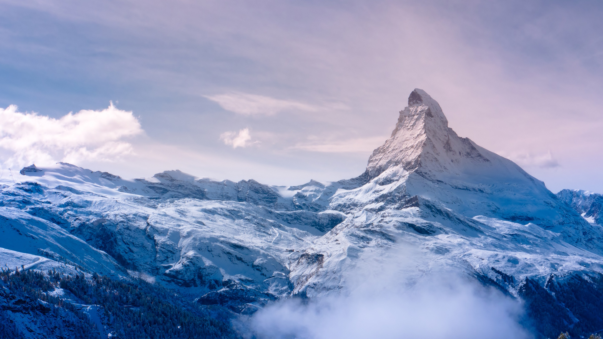

known locally as Sagarmatha[a] in Nepal and Qomolangma[b] in Tibet, is Earth's highest mountain above sea level. It lies in the Mahalangur Himal sub-range of the Himalayas and marks part of the China–Nepal border at its summit. [4] Its height was most recently measured in 2020 by Chinese and Nepali authorities as 8,848.86 m (29,031 ft 8+1⁄2 in).[5][6] Mount Everest attracts many climbers, including highly experienced mountaineers. There are two main climbing routes, one approaching the summit from the southeast in Nepal (known as the standard route) and the other from the north in Tibet. While not posing substantial technical climbing chall enges on the standard route, Everest presents dangers such as altitude sickness, weather, and wind, as well as hazards from avalanches and the Khumbu Icefall. As of May 2024, 340 people have died on Everest. Over 200 bodies remain on the mountain a nd have not been removed due to the dangerous conditions.[7][8]  Climbers typically ascend only part of Mount Everest's elevation, as the mountain's full elevation is measured from the geoid, which approximates sea level. The closest sea to Mount Everest's summit is the Bay of Bengal, almost 700 km (430 mi) away. To approximate a climb of the entire height of Mount Everest, one would need to start from this coastline, a feat accomplished by Tim Macartney-Snape's team in 1990. Climbers usually begin their ascent from base camps above 5,000 m (16,404 ft). The amount of elevation climbed from below these camps varies. On the Tibetan side, most climbers drive directly to the North Base Camp. On the Nepalese side, climbers generally fly into Kathmandu, then Lukla, and trek to the South Base Camp, making the climb from Lukla to the summit about 6,000 m (20,000 ft) in elevation gain.